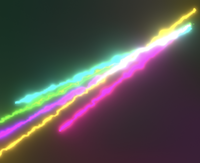
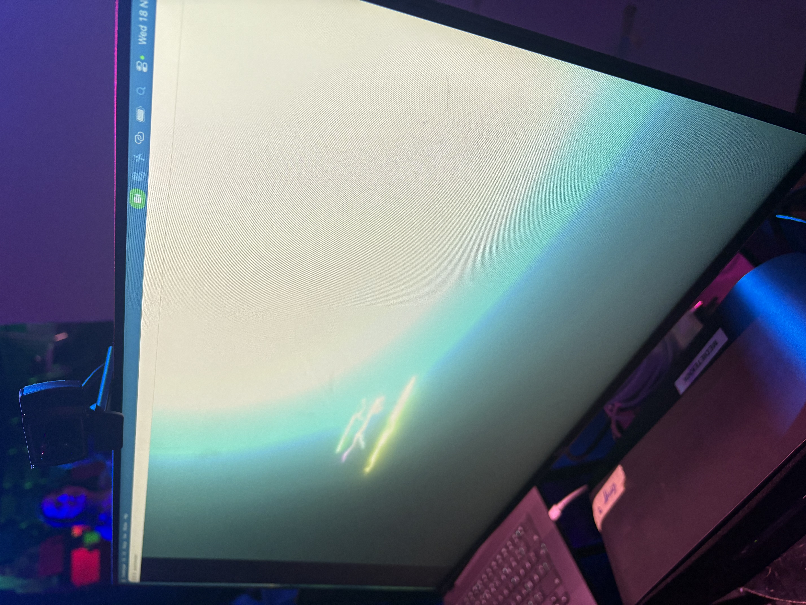

Hasti Talimi and Nicole V-A Jegardt
IT, Medier och Design
Project - Algorave
- Electric Hands is an interactive audiovisual installation where your hands become the instrument. Using hand tracking in p5.js, the camera follows your hands and draws their skeleton, with lightning arcing between them. With one hand, a bolt forms between your hand and index finger, and you can control its thickness. Through a OSC bridge built in VS Code, the movement is sent to TouchDesigner, which creates colorful lightning and controls the music’s volume. Raised hands give one color palette, lowered hands another. Bring your hands together and a glowing orb explodes from the corner across the whole screen. We are two students who loved mixing code, music and light into playful, immersive experiences.


